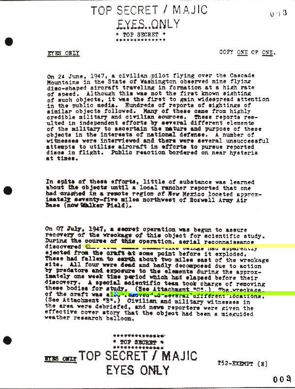

| Document | Traduction |
|---|---|
|  |
* TOP SECRET * ************** CONSULTATION SEULEMENT COPIE UNE SUR UNE. Mountains dans l'état de Washington observa neuf appareils d'apparence disco�dale évoluant en formation à vitesse �lev�e. Bien que ceci ne fut pas la première observation connue de tels objets, elle fut la première à attirer l'attention de l'ensemble des m�dias grand public. Des centaines de signalements d'observations d'objets similaires suivirent. Nombre de ceux-ci provirent de sources militaires et civiles très crédibles. Ces rapports abou- tirent� des efforts indépendants de la part de divers éléments militaires visant à rendre compte de la nature et des intentions de ces objets dans l'intérêt de la défense nationale. Nombre de témoins furent interrog�s et il y eut diverses tentatives infructueuses d'utiliser des appareils afin de poursuivre en vol les disques signalés. La réaction du public frisa l'hyst�rie par moments. En dépit de ces efforts, peu de choses furent apprises au sujet de ces objets jusqu'� ce qu'un fermier local signala qu'un de ceux-ci s'était �cras� dans une région �loign�e du Nouveau Mexique située appro- ximativement soixante-quinze miles au nord-ouest de la Base A�rienne Militaire de Roswell (aujourd'hui Walker Field). Le 07 Juillet 1947, une opération secr�te fut lanc�e pour s'assurer de la r�cup�ration de l'�pave de cet objet pour une étude scientifique. Au cours de cette opération, une reconnaissance a�rienne découvrit la prèsence de quatre petits êtres d'apparence humaine ayant apparemment �t� �ject�s de l'appareil en un point quelconque avant son explosion. Ceux-ci étaient tomb�s à terre à peu près deux miles à l'est du site de l'�pave. Tous les quatre étaient morts et particulièrement décompos�s en raison de l'action des pr�dateurs et de leur exposition aux éléments durant la période appro- ximative d'une semaine qui s'�coula avant leur découverte. Une unité scientifique spéciale prit en charge l'enlèvement de ces corps pour étude (Voir Pi�ce Jointe "C"). L'�pave de l'appareil fut également enlevée et transport�e en différents endroits (Voir Pi�ce Jointe "B"). Les témoins civils et militaires de la zone furent d�brieff�s, et les journalistes re�urent le récit adéquat indiquant que l'objet en question était un ballon-m�teo de recherche �gar�. * TOP SECRET * ************** CONSULTATION SEULEMENT T52-EXEMPT (E) 0 0 3 /.. |